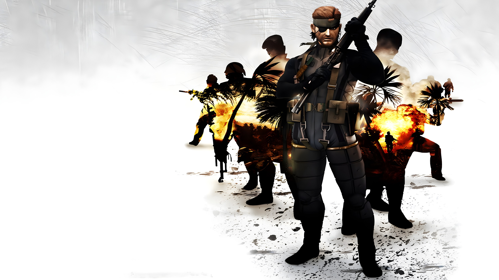
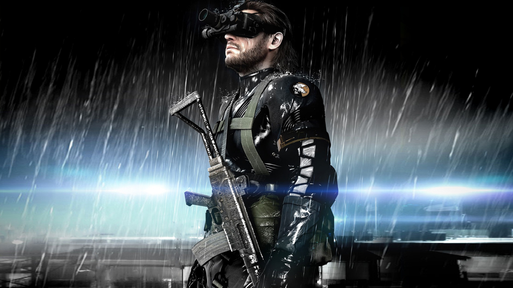
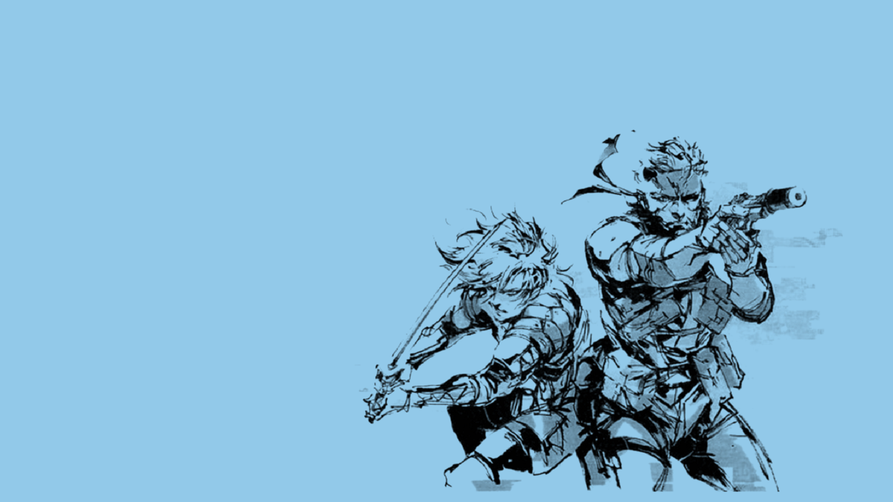
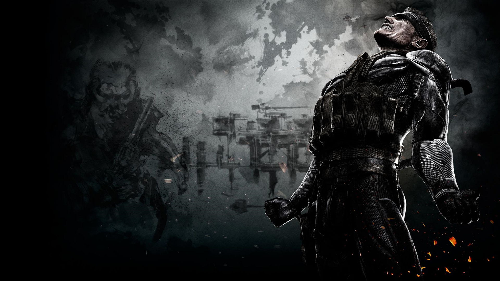

Cronología completa de Metal Gear
La saga Metal Gear recorre varias décadas de historia y presenta una evolución enorme en tono, conflicto y escala. Lo que empieza como una misión de espionaje en plena Guerra Fría termina convirtiéndose en una historia sobre guerras privadas, control ideológico, clonación, manipulación genética, inteligencia artificial y el costo humano de vivir como soldado.
A continuación está la cronología completa en orden interno de los acontecimientos, con las localizaciones principales y los jefes más importantes de cada juego.
Metal Gear Solid 3: Snake Eater

La historia comienza en 1964, en plena Guerra Fría. Naked Snake es enviado a la Unión Soviética para rescatar al científico Sokolov, destruir el Shagohod y detener una crisis internacional que podría escalar a una guerra nuclear. La misión se complica cuando su mentora, The Boss, aparece como traidora y se une al bando enemigo. Lo que parecía una operación táctica se convierte en una tragedia personal y política que define toda la vida de Snake.
En esta etapa nace el mito de Big Boss. Snake no solo sobrevive a una misión imposible, sino que también carga con la responsabilidad emocional de haber enfrentado a la persona que más admiraba. Ese momento no solo cambia su identidad, también marca el inicio de una nueva visión del soldado, del deber y de la guerra.
Localizaciones principales:
- Jungla soviética de Tselinoyarsk
- Río Chyornaya
- Cueva Chyornaya Peschera
- Groznyj Grad
- Krasnogorje
- Swampland y laboratorio de los alrededores
Jefes y enfrentamientos importantes:
- Ocelot
- The Pain
- The Fear
- The End
- The Fury
- The Sorrow
- Colonel Volgin
- The Boss
Metal Gear Solid: Portable Ops

Después de Snake Eater, Big Boss continúa desarrollando su visión militar. En Portable Ops, se enfrenta a un motín interno y a una nueva conspiración dentro de su propia estructura. La historia muestra cómo Big Boss empieza a reunir soldados a su alrededor y a construir lo que luego será la base de su futuro poder.
Esta etapa es importante porque deja ver que Big Boss ya no piensa como un simple operativo. Ahora quiere formar una fuerza militar independiente, más allá de los gobiernos, y ese objetivo empieza a tomar forma.
Localizaciones principales:
- San Hieronymo Peninsula
- Instalaciones militares clandestinas
- Campamentos y zonas selváticas
- Áreas subterráneas controladas por insurgentes
Jefes y enfrentamientos importantes:
- Cunningham
- Python
- Null
- Gene
- Ursula
- Elisa
Metal Gear Solid: Peace Walker

Big Boss ya ha dejado atrás la obediencia a los gobiernos tradicionales y crea Militaires Sans Frontières, una fuerza militar independiente. En Costa Rica se enfrenta a una amenaza nueva: armas nucleares automatizadas, inteligencia artificial y una red de manipulación que demuestra que la guerra ya no depende solo de soldados humanos.
Peace Walker es uno de los puntos más importantes de la cronología porque muestra a Big Boss consolidando su idea de que los soldados deben tener su propio lugar en el mundo. Sin embargo, también deja ver que esa visión se está volviendo peligrosa y que su ideal se puede deformar con facilidad.
Localizaciones principales:
- Costa Rica
- Selvas tropicales
- Complejos militares ocultos
- Plataformas marítimas y bases móviles
- MSF Mother Base
Jefes y enfrentamientos importantes:
- Chrysalis
- Pupa
- Cocoon
- Peace Walker
- Metal Gear ZEKE
- Los soldados de Cipher y fuerzas armadas especiales
Metal Gear Solid V: Ground Zeroes

Ground Zeroes es el momento en que todo empieza a derrumbarse. Big Boss intenta rescatar a prisioneros y proteger su organización, pero la misión termina en desastre. La base cae, la operación falla y el mundo de Big Boss entra en una etapa de ruptura total.
Este juego sirve como antesala del colapso que se ve después en The Phantom Pain. La historia ya no gira en torno a construir, sino a sobrevivir al daño causado por la caída de todo lo anterior.
Localizaciones principales:
- Camp Omega, Cuba
- Helipuerto y zonas de detención
- Perímetro de seguridad de la base
- Zonas de extracción y escape
Jefes y enfrentamientos importantes:
- Fuerzas de XOF
- Helicópteros de combate
- Vehículos blindados
- Choques directos con los soldados de Skull Face
Metal Gear Solid V: The Phantom Pain

The Phantom Pain transcurre después de la caída total de la base y muestra un mundo mucho más oscuro, fragmentado y marcado por la pérdida de identidad. Big Boss ya no es solo un líder militar: su historia se convierte en una red de trauma, reconstrucción y venganza. La guerra ahora también es psicológica y biológica.
La historia se mueve entre Afganistán y África, mientras se desarrollan nuevas armas, nuevos soldados y una nueva etapa del conflicto entre poder militar y control ideológico. La construcción de Mother Base vuelve a estar en el centro del relato, pero ahora con un peso emocional mucho más fuerte.
Localizaciones principales:
- Afganistán
- Provincia de Da Shago Kallai
- Montañas y campamentos militares
- África central
- Aldeas abandonadas y bases enemigas
- Mother Base
Jefes y enfrentamientos importantes:
- Quiet
- The Man on Fire
- Skull Face
- Los Skulls
- Sahelanthropus
- Eli
- Volgin en su forma alterada
Metal Gear

Muchos años después, Solid Snake entra en escena y es enviado a Outer Heaven para infiltrar la fortaleza, rescatar a Gray Fox y destruir el prototipo de arma nuclear conocida como Metal Gear. Lo que encuentra ahí cambia el rumbo de la saga, porque descubre que el enemigo está mucho más cerca de lo que imaginaba.
La operación termina revelando el peso real del mito de Big Boss, ya convertido en una figura de poder militar que desafía directamente al mundo entero.
Localizaciones principales:
- Outer Heaven
- Fortaleza militar secreta
- Instalaciones subterráneas
- Zona de lanzamiento del Metal Gear
Jefes y enfrentamientos importantes:
- Shotmaker
- Machine Gun Kid
- Hind D
- Dirty Duck
- Metal Gear TX-55
- Big Boss
Metal Gear 2: Solid Snake

Snake vuelve a ser enviado a una misión crítica, esta vez en Zanzibar Land. Allí enfrenta de nuevo la expansión de un poder militar extremo y la continuidad del proyecto de guerra total que Big Boss intenta consolidar. Este juego refuerza el choque ideológico definitivo entre ambos personajes.
La tensión entre Snake y Big Boss ya no es solo militar, sino también filosófica. Lo que está en juego no es únicamente la destrucción de un arma, sino el futuro de toda una forma de entender la guerra.
Localizaciones principales:
- Zanzibar Land
- Instalaciones fortificadas
- Subterráneos militares
- Áreas controladas por mercenarios
Jefes y enfrentamientos importantes:
- Black Ninja
- Red Blaster
- Running Man
- Hind D
- Metal Gear D
- Big Boss
Metal Gear Solid

Solid Snake regresa para enfrentar una crisis en Shadow Moses, una instalación militar tomada por FOXHOUND. Allí descubre que el grupo terrorista amenaza con usar Metal Gear Rex para desatar una catástrofe nuclear. La operación se vuelve aún más personal cuando aparece Liquid Snake y se revela el proyecto de clonación que conecta a Snake con Big Boss.
Shadow Moses es uno de los escenarios más icónicos de la saga porque mezcla nieve, tecnología, conspiración, traición y drama familiar. La historia aquí ya no gira solo en torno a la misión: también trata sobre identidad, legado y el peso de ser un clon.
Localizaciones principales:
- Shadow Moses Island
- Hangar de Metal Gear Rex
- Bloque de celdas
- Área de misiles
- Torres de vigilancia y subniveles
Jefes y enfrentamientos importantes:
- Revolver Ocelot
- Vulcan Raven
- Psycho Mantis
- Sniper Wolf
- Gray Fox
- Metal Gear Rex
- Liquid Snake
Metal Gear Solid 2: Sons of Liberty

La historia cambia de enfoque con Raiden como protagonista en una operación que parece simple, pero que rápidamente se convierte en una experiencia diseñada para manipularlo. Big Shell no es solo una instalación: es parte de un experimento ideológico mucho mayor.
La verdadera amenaza en esta entrega no es solo física, sino informativa. Los Patriots usan la estructura del mundo para controlar lo que la humanidad ve, cree y recuerda. El conflicto se vuelve una discusión sobre la verdad, la censura y el poder de la simulación.
Localizaciones principales:
- Big Shell
- Plantas de tratamiento y plataformas marinas
- Pasillos subterráneos y niveles industriales
- Áreas inundadas y laboratorios secretos
Jefes y enfrentamientos importantes:
- Olga Gurlukovich
- Fortune
- Vamp
- Fatman
- Metal Gear Ray
- Solidus Snake
Metal Gear Solid 4: Guns of the Patriots

Snake vuelve en un mundo dominado por guerras privadas, sistemas de combate automatizados y nanomáquinas que controlan a los soldados. Esta entrega cierra gran parte de la historia central de la saga y muestra a un Solid Snake envejecido, desgastado y obligado a enfrentarse a un planeta donde la guerra se volvió una industria.
El juego recorre varios escenarios del mundo y reúne en un solo conflicto muchas de las piezas que la saga había construido durante años. También es una despedida emocional para varios personajes que marcaron toda la franquicia.
Localizaciones principales:
- Middle East
- Shadow Moses Island
- Europa del Este
- Sudamérica
- Outer Haven
Jefes y enfrentamientos importantes:
- Laughing Octopus
- Raging Raven
- Crying Wolf
- Screaming Mantis
- Vamp
- Liquid Ocelot
- Metal Gear REX
- Metal Gear RAY
Metal Gear Rising: Revengeance

Raiden toma el protagonismo en un futuro dominado por tecnología extrema, mercenarios y conflictos corporativos. Aunque el tono es más directo y frenético que en el resto de la saga, sigue conservando las ideas centrales de Metal Gear: guerra, poder, control y la transformación del cuerpo humano en arma.
La historia se mueve por distintas zonas urbanas y complejos militares donde Raiden se enfrenta a enemigos que mezclan ideología, tecnología y violencia pura.
Localizaciones principales:
- Abjasia
- Ciudad de Guadalajara
- Instalaciones de Desperado
- Complejos industriales y bases militares
- Áreas urbanas devastadas por el conflicto
Jefes y enfrentamientos importantes:
- Blade Wolf
- Mistral
- Monsoon
- Sundowner
- Jetstream Sam
- Metal Gear Excelsus
- Senator Armstrong
Conclusión
La cronología de Metal Gear muestra cómo una guerra secreta en la Guerra Fría termina convirtiéndose en una reflexión enorme sobre la identidad, la lealtad y la manera en que los sistemas de poder usan a los soldados para sostener el mundo que construyen. Cada juego añade una pieza nueva al conflicto y conecta con el anterior mediante personajes, ideologías y traiciones que atraviesan generaciones.
Desde The Boss y Big Boss hasta Solid Snake, Raiden y los Patriots, toda la saga gira alrededor de una misma pregunta: qué significa realmente ser un soldado en un mundo donde la guerra nunca deja de reinventarse.